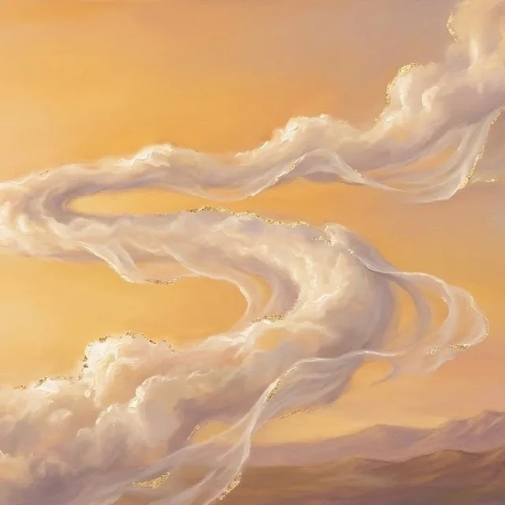

Energiearbeit · Körperwahrnehmung · Kreativer Ausdruck
Zwischen Verstehen und Erleben liegen oft Welten.
Dein kostenloses Kennenlernen · bis zu 30 Minuten
Energiearbeit · Körperwahrnehmung · Kreativer Ausdruck
Dein kostenloses Kennenlernen · bis zu 30 Minuten


Mutter, viele Jahre pädagogisch tätig und selbst durch Krisen gegangen. Heute begleite ich Menschen auf ihrem eigenen Weg.
Spürst du, dass sich etwas in deinem Leben verändern möchte? Ich begleite dich mit schamanischer Energiearbeit der Anden und des Amazonas, feiner Körperwahrnehmung und kreativem Ausdruck. Achtsam und in deinem Tempo.

Illumination, Cord Cutting, Extraktion, Entkopplung
Schattenarbeit, Täter-Opfer-Retter-Dreieck
Rückverbindung, innere Landkarte
Kreativer Ausdruck, Natur, dein nächster Schritt
Veränderung kann niemand für dich machen. Ich begleite dich dabei.
So steigen wir ein
Kostenloses Kennenlernen
Ankommen mit dem Pendel
Die Begleitung, die zu dir passt
Klärung & Abschluss
Für dich
Bis zu 30 Minuten, unverbindlich und in Ruhe. Wir schauen gemeinsam, ob und wie ich dich begleiten kann.

Meine Arbeit ist eine energetische und körperorientierte Begleitung. Sie ersetzt keine ärztliche, psychotherapeutische oder heilpraktische Diagnose oder Behandlung. Ich gebe keine Heilversprechen.